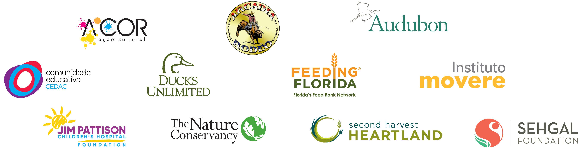

COMMUNITY
We live in the communities where we operate, so doing our part to support local sustainability is something we care deeply about. Mosaic proudly supports the strength and vibrancy of its neighbors through corporate and local giving and volunteerism. We believe that by contributing to meaningful initiatives and programs, we can make a positive impact on our local communities and around the world.
The Mosaic Company, The Mosaic Company Foundation and The Mosaic Institute in Brazil make investments in our core focus areas—food, water and communities. Combined contributions in 2018 reached more than $12 million. We strive to be a thoughtful and engaged neighbor, investing carefully and generously as we seek long-term partnerships with organizations that are making a difference.

Mosaic Fertilizantes concluded a 49-day Food Donation Campaign in November to benefit families and nonprofit organizations in the communities where they live and work. By the end of the campaign, Mosaic Fertilizantes helped provide food to more than 46,000 people.
Mosaic Fertilizantes also partnered with Instituto Movere to train 100 school lunch staff in Tapira (Minas Gerais), Capela and Rosário do Catete (Sergipe), on fully using ingredients and preparing healthy meals while also minimizing food waste.
Read more about other Mosaic hunger relief initiatives from 2018.
Mosaic is committed to building strong, sustainable relationships with all people within our communities. In 2018, we continued to expand our outreach efforts in Canada and supported a wide variety of Indigenous community events and projects, including funding food programs, supporting pre-employment programs and offering potable water operator education training to First Nations. In total, we supported more than 35 Indigenous and Métis projects in Saskatchewan. Some of our investments included:
Mosaic provided $150,000 to fund equipment for the new Industrial Arts Lab at Kakisiwew School on Ochapowace First Nation that will open in Fall 2019. The Lab will be used by high school students and other young adults in the community and will initially focus on woodworking and carpentry skills, with an opportunity to expand to other trades. Potential opportunities for students include: learning trade skills, receiving apprenticeship credits before graduating high school, working on projects right in the local community and developing a social enterprise.
Keeseekoose First Nation, located near our Esterhazy operations, applied for a $50,000 Mosaic grant in 2018 that would assist with the purchase of a charter bus to help remove barriers in transporting residents to and from their community. Many have benefited since they acquired the bus, particularly students from the local elementary school who now can attend events that were once not readily accessible to them. Community members have enjoyed educational activities, health and exercise outings, and an anti-bullying workshop with the use of the bus. Multiple charter trips have allowed local carpenters to purchase work clothes and supplies, and social assistance clients to shop during the holidays.
Our presence is global, but our impact is local. The photos below highlight some of the many Mosaic employee volunteer events from 2018.
Name
Karla Guzman-Mims
Title
Corporate Social Responsibility Manager
Years at mosaic
6.5
Location
Tampa, Florida
In my role as Corporate Social Responsibility Manager, I am always impressed with Mosaic’s commitment to our local communities… The workforce training partnerships formed with institutions of higher learning in Florida, New Mexico and Canada help develop much-needed talent for our industry.
Karla Guzman-Mims
We are always striving to operate more efficiently, reduce our use of resources and minimize our environmental impact. Over the years, we’ve improved our safety performance and reduced our water consumption.
In Florida, we’ve improved our land reclamation efforts and increased our use of virtually greenhouse gas emissions-free cogenerated electricity.
In 2018, we acquired Vale Fertilizantes—which led to the formation of Mosaic Fertilizantes in Brazil last year. Three of these facilities use a process similar to cogeneration.
In both Florida and Brazil, the electricity harnessed through these processes is used to help power our operations. Our employees—many of whom are (STEM)-trained miners, operators, engineers, scientists, analysts and accountants—have been critical to those efforts.
Realizing that young people who develop an early appreciation for STEM principles are more likely to become professionals in STEM fields, Mosaic supplies approximately $460,000 annually in support of K-12 education throughout our operating counties/parishes in Florida and Louisiana. This funding enables local students to participate in a variety of educational programs during the school year, such as learning about marine science, biology and ecosystems in outdoor classrooms, and taking part in programs aimed at helping improve students’ overall reading and math scores.
Mosaic is engaged in workforce training with institutions local to some of our key geographies. In Florida, we partner with Polk State College and State College of Florida Manatee-Sarasota. Both schools have a strong focus on STEM education and are in close proximity to our Central Florida operations. In New Mexico, Mosaic partners with New Mexico State University—Carlsbad to bring an industrial maintenance training program for electricians and mechanics. The program is currently in its sixth year. In Canada, Mosaic partners with Saskatchewan Indian Institute of Technologies (SIIT) to support the Mining Industry Pre-Employment Program, which provides undergraduate students a two-week practicum at our Colonsay, Belle Plaine and Esterhazy sites.
These opportunities offer students in North America a variety of foundational, technical and soft skills for careers in advanced manufacturing and help fill the gap throughout the industry.
Mosaic recruits from seven universities around the country that have strong engineering programs, and each year, Mosaic offers approximately 40 chemical, mechanical, mining and electrical engineering co-ops in Florida and Louisiana, which provide hands-on training for students.
Reporting and transparency have been integral to Mosaic’s sustainability journey. For a full list of our voluntary reporting efforts, please visit our website. View our 2018 Sustainability Disclosure & GRI Index to learn more about our sustainability progress.